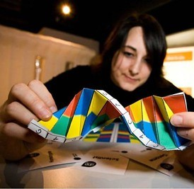

Alex the BI/Analytics Engineer

- Alex needs to apply software engineering best practices to analytics code to ensure clean, transformed data are ready for analysis.
- They struggle with getting access to the data they need and with creating structure out of unstructured data pulled from different sources
- We can help them by centralizing the storage of data; providing tools for data modeling, testing, and cataloging, with training on how to use those tools; enabling direct access to this data for analysts, data scientists and other users; and enabling people to share their work products to reduce overhead for future work
Alex needs tools to manage data discovery, lineage, and transformation
Alex’s job is to empower people to answer questions by building data tables and providing clean, transformed datasets. An embedded business analyst needs some data about medication use at Fred Hutch? Boom, Alex is there with an analysis-ready dataset and accompanying documentation. A clinical analyst needs new tables built for a Tableau dashboard? A researcher needs data from their EHR transformed into the format of a specific biospecimen database? Bam, Alex is on it like green on grass—anything to move work at Fred Hutch forward. But Alex’s data is sourced from a lot of different places, and they have no good tools for discovering all available data, managing reference data, or tracking data sources and lineage. Additionally, the data sets are all structured differently, and sometimes there are discrepancies across reports in how objects are defined, resulting in conflicting reports or broken code. Alex will never forget the time their clinical analyst colleagues had to figure out why two reports on patients with brain metastases, created by different departments but ostensibly using the same kinds of data, didn’t match. It took weeks of long emails and redundant work to find out that the problem was because some key Epic workflows had changed, but only a few people knew about it. Alex built some new objects after the fact to make sure it never happened again, but they still worry that some other case like this could spring up. It would speed Alex’s work up considerably if they could get data from a single centralized platform, and be able to ingest data more easily from outside sources, and have better tools for making sure everyone at Fred Hutch uses consistent data definitions. Sometimes Alex runs into a thorny dilemma or an area where they’re not sure of the best practices or right tools, and they wish they had peers to talk it through with. But Alex doesn’t know anyone else in Fred Hutch who does the same kind of work – it would be great if they had a way to find out.
Collaborators: Melissa the Clinical Analyst, Fundikira the Financial Analyst, Daisy the Data Scientist, Carina the Clinical Researcher
Downstream users: Service Line Managers and clinical leaders, Bashir the Business Analyst
Key Challenges
- Data is distributed between multiple sources and structured in multiple ways, increasing the effort to collect, transform, and interpret it
- Unknown unknowns: datasets or fields that Alex does not know exist or is not able to access and learn
- Getting timely access to some data sets not yet in Fred Hutch’s data warehouse
- Implementing data definitions, which may vary between projects and departments
- Little tooling support for data modeling work (e.g., comparing schemas between databases, tracking lineage, efficiently creating customized versions of data models for downstream end users)
- Unstable data sources that change structure frequently (e.g., CMS)
- Overcoming issues with data latency and downtime
- Understanding how to improve computational efficiency of queries
Needs and Wants
- A single data lake for clinical data of all forms
- A PHI-approved place to store standardized analysis-ready data sets, with documentation and metadata attached for future reference
- A way to share resources and knowledge with other analytics engineers in Fred Hutch
- Ongoing data engineering support from a central org-wide service for data ingestion and org-wide data objects (e.g., diagnosis reference data)
- Updated and standardized development tools across the organization
- Tools to support efficient, less error-prone reference data management
- Tools to support tracking of source-to-target and data lineage and impacts of changes in raw data on downstream data models and reports
- A way to rapidly ingest data from external sources when needed
Types of data used
- EHR data, including data from legacy systems
- Curated data tables built to represent the “source of truth” with accepted data definitions
- lab data
- clinical trials management system data
- other data including financial and hr data when needed
- external data (e.g., DOH reports, CMS reference data)
- custom attribution data (e.g., constructs specific to Alex’s institution)
Image attribution: “DNA Origami by Alex Bateman @alexbateman1 @sangerinstitute @emblebi #DNAOrigami” by dullhunk is licensed under CC BY 2.0.
Acknowledgments: Thanks to members of the clinical and financial analytics and data platform teams for their input!
last updated July 2024